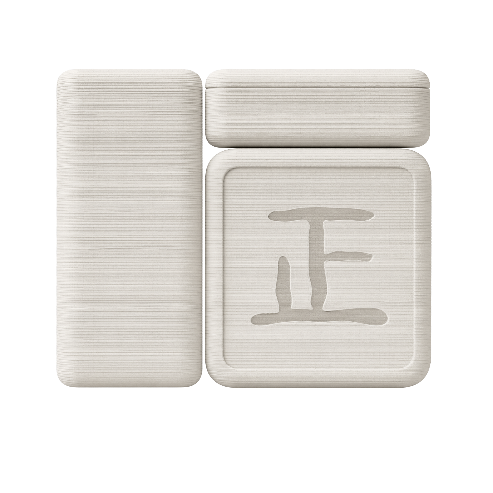

炉瓶三事，香事井然。香炉 · 著瓶 · 香粉盒。 Burner, Zhuping, Box — the three essentials of incense.

香道之事，贵在「静」与「序」。而香道器具的美学，「不抢」是核心——不抢香的味，不抢烟的美。正窑经典炉瓶三事套件选用定窑白瓷泥为胎。定窑，宋代五大名窑之一，窑址在今河北曲阳涧磁村，以烧制白瓷独步天下。其白非凡俗冷白，也不是漂白过的刺白——而是一种有温度的白，白中微微泛暖黄，像象牙、像温玉、像冬日第一缕光照在宣纸上。识者称之为「象牙白」。
The art of incense values stillness and order — and the aesthetic of incense tools centers on one principle: the vessel should not compete. Not with the scent, not with the smoke. All pieces in the Zhengyao Classic Lu-Ping-Sanshi Set are crafted from Dingyao white porcelain clay. Dingyao — one of the Five Great Kilns of the Song Dynasty, firing in present-day Quyang, Hebei — was unrivaled in white porcelain. Its white is not cold industrial white, nor the harsh white of bleach. It is a white with temperature — faintly warm, faintly yellow, like ivory, like jade warmed in the palm, like the first winter sunlight falling on xuan paper. Connoisseurs call it "ivory white."
为什么是这种白？世界上那么多颜色，最能让人安静下来的，往往是自然的原色——亚麻色、原木色、植鞣皮革随岁月变深的蜜色、原棉的灰白……它们有一个共同点：不喧哗，不抢夺，只是安静地做自己。定窑白瓷，正是这样一类颜色。它不抢线香的烟，不压香粉的色——让器物退后，让香气本身成为主角。
Why this white? Of all the colors in the world, the ones that quiet the mind are usually nature's originals — linen, raw wood, the honey-brown that vegetable-tanned leather deepens into, the grey-white of unbleached cotton. They share one quality: they do not shout. They do not compete. They are simply themselves, quietly. Dingyao white porcelain belongs to this family. It does not compete with the wisp of smoke, does not mask the subtle hue of the powder — the vessels step back, letting the fragrance take center stage.
施以透明釉，在 1280°C 窑火中，釉面自然流淌，凝结出定窑标志性的「泪痕」纹理。每一件上的泪痕走向都不同，天然唯一，无法复制。定窑白瓷的釉面致密，气孔极少，长期使用依然光洁如初。三件器物，三种角色：香炉承火，侧面开孔均匀进风，烟雾柔顺；著瓶藏器，收纳香箸与香铲，取出顺手、放入安稳；香粉盒存味，盖子直接扣合，密合度极高。
Glazed transparent and fired at 1280°C, the glaze flows naturally across the surface, leaving Dingyao's signature "tear-mark" drips. No two pieces have the same pattern — each one, naturally one of a kind. The glaze of Dingyao porcelain is exceptionally dense, with minimal surface porosity, staying luminous even after long use. Three vessels, three roles: the burner — with side air inlets for even airflow and gentle smoke; the zhuping — home to incense tongs and shovel, tools glide in and out with ease; the powder box — lid placed directly on top, exceptionally snug.
而最令我们骄傲的，是圆角。所有转角均采用 G2 曲率连续曲线——这意味着，曲线在转角处不仅相切（G1），而且曲率变化是连续的（G2），没有任何突然的折点。视觉上，它看起来「无比顺滑」；手感上，指腹滑过转角，感受不到任何生硬的突变。这种曲线，在汽车设计里意味着百万级车身的流线，在字体设计里意味着 Helvetica 的温润，在 Apple 的产品里意味着你拿在手里那块铝合金为什么摸起来「刚刚好」——那不是巧合，那是 G2。定窑白瓷的釉面，把这道曲线的手感，放大到了极致。
But what we are proudest of is the curves. Every corner is refined with G2 curvature continuity — meaning the curves are not only tangent (G1), but the rate of curvature itself changes smoothly (G2), with no sudden kink. Visually, it looks impossibly fluid. To the touch, your fingertips glide across the corner and feel no harsh transition. This is the same curve that shapes million-dollar car bodies, that gives Helvetica its warmth, that makes an iPhone's edge feel "just right" in your hand. That is not coincidence. That is G2. The glaze of Dingyao porcelain amplifies the tactile perfection of this curve to its limit.
3D 打印，让复杂变得轻盈。香炉侧面的进风孔、著瓶的精密承托口、香粉盒盖与盒身的微米级密合——每一个细节的背后，都是数字建模与增材制造在默默支撑。传统陶瓷成型，越复杂的结构，模具越多、成本越高；而 3D 打印，复杂几乎不增加额外的成本。这让我们可以专注于「什么是对的」，而不必担心「什么是便宜的」。自由地设计，自由地制作——这是 3D 陶瓷打印带给这场香事的许诺。
3D printing makes complexity weightless. The burner's side air inlets, the zhuping's precisely calculated opening, the powder box's micron-level lid fit — behind every detail, digital modeling and additive manufacturing quietly hold the line. In traditional ceramic forming, the more complex the structure, the more molds required, the higher the cost. With 3D printing, complexity adds almost nothing. This lets us focus on what is right, not merely what is cheap. The freedom to design, the freedom to make — that is the promise 3D ceramic printing brings to the incense ritual.
一炉静燃，心归当下。
One burner, presence revealed.
拖拽旋转 · 滚轮缩放 · 双指捏合Drag to rotate · Scroll to zoom · Pinch to scale
炉身由 3D 打印一体成型，线条从底部向上自然收拢，形成安静的轮廓。进风口均匀分布，确保香料燃烧充分、烟雾柔顺。炉内空间适配线香、盘香或香粉，满足不同用香习惯。
The body is 3D printed as a single piece, with lines naturally tapering upward from the base into a quiet silhouette. Evenly distributed air inlets ensure full burning and gentle smoke flow. The interior accommodates incense sticks, coils, or powder — adapting to your preferred practice.
流畅曲面造型，3D 打印独有工艺Fluid curved form — unique to 3D printing
进风口均匀设计，燃烧充分Evenly distributed air inlets — full, clean burn
炉内空间适配线香/盘香/香粉Interior fits sticks, coils, and powder
底部平整，放置稳固Flat base — stable placement
香箸与香铲，各归其位。
Tongs and shovel, each in its place.
拖拽旋转 · 滚轮缩放 · 双指捏合Drag to rotate · Scroll to zoom · Pinch to scale
著瓶是香事中收纳香箸与香铲的家——让工具各归其位，取用自如。瓶口经过精密计算，稳固承托不同规格的香箸与香铲，取出时顺手，放入时安稳。底部配重设计，不易倾倒。不需复杂结构，只是一只形状得当的瓶子。简约最难，也最美。
The zhuping is home to the incense tongs and shovel — keeping every tool in its place, ready at a moment's notice. The opening is precisely calculated to securely hold incense tools of different sizes, gliding in and out with ease. A weighted base keeps it steady. No complex structure needed — just a properly shaped bottle. Simplicity is the hardest thing to get right, and the most beautiful.
瓶口精密计算，适配香箸与香铲Precisly calculated opening — fits incense tongs and shovel
3D 打印一体成型，无接缝3D printed single piece — seamless
底部配重设计，不易倾倒Weighted base — tip-resistant
定窑白釉，易清洁，久用光洁如初Dingyao white glaze — easy to clean, stays luminous
香粉细藏，气味有归。
Fragrance stored, scent finds home.
拖拽旋转 · 滚轮缩放 · 双指捏合Drag to rotate · Scroll to zoom · Pinch to scale
香粉是香事里最细腻的存在，需要一个妥善的容器。盒盖与盒身由 3D 打印精准成型，密合度极高，盖子直接盖合即可妥善保存香粉。盒内壁釉面处理，香粉不吸附，每次取用干净利落。盒身小巧，单手可开合，放在香案上不占空间。
Incense powder is the most delicate presence — it needs a proper home. The lid and body are precisely formed by 3D printing for an exceptionally snug fit. Simply place the lid on top to keep the powder protected. The glazed interior prevents powder from clinging to the walls — every scoop is clean and precise. Compact and easily opened with one hand.
3D 打印精准成型，密合度高3D printed for precise fit — airtight seal
内壁釉面处理，香粉不吸附Glazed interior — powder doesn't cling
单手可开合，使用便捷One-hand open/close — convenient
小巧精致，不占空间Compact and refined — space-efficient
⚠️ 尺寸与重量为参考值，请以实物为准。三件可单独购买，也可成套选购。手工上釉，每件釉色略有差异，属正常现象。 ⚠️ Dimensions are reference values. Please refer to the actual product. Available individually or as a set. Hand-glazed — slight color variations are natural.
书房 · 茶席 · 卧室 · 冥想 · 瑜伽 · 香道练习
Study · Tea table · Bedroom · Meditation · Yoga · Incense practice